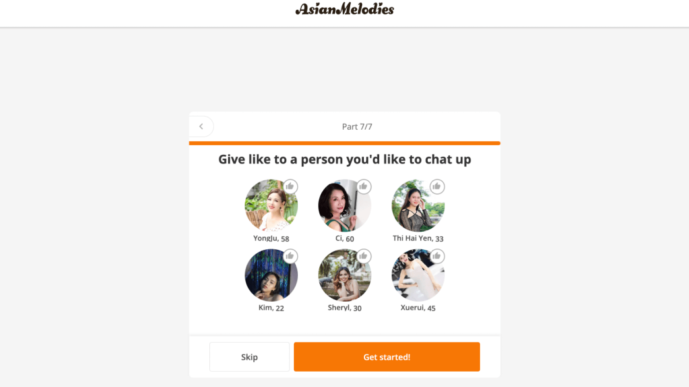
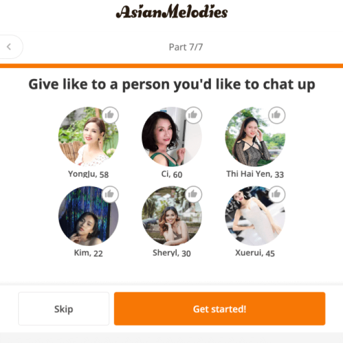
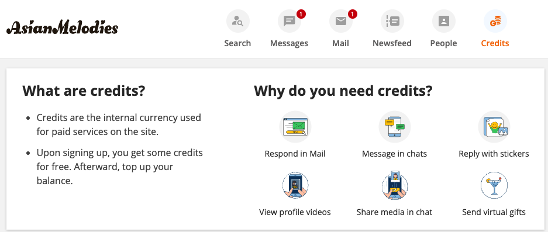
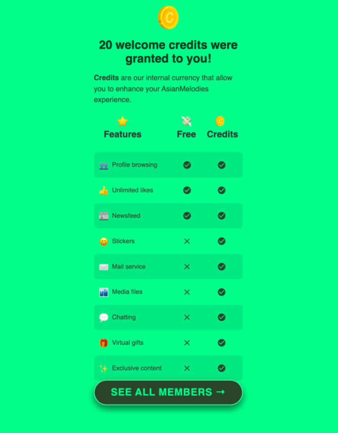

I Never Imagined Dating with an Asian Woman Could Be This Amazing…
David Martinez @davidmartinez85
My life once felt hopeless and empty. I went through a difficult divorce after 20 years of marriage to my American wife. Our relationship was tense and exhausting. She constantly demanded that I change — to be someone I wasn’t. She didn’t like my style, my friends, or even talking about intimacy. I felt like a stranger in my own life. Finally, when I was completely burned out, I realized it was time for a change.
At 52, after such a long marriage, I didn’t know how to start over. I even began to think that I might be destined to stay alone. However, my friends convinced me not to give up and suggested I try dating websites. My first attempts were disappointing: many platforms required paid subscriptions but offered little in return, and some profiles seemed like bots rather than real people.
Still, I knew I deserved better. Deep down, I hoped to find someone special.
The Discovery That Changed My Life
One day, I stumbled upon an article about Asian women that truly captivated me. Their culture, values, and upbringing seemed so relatable and appealing. I was looking for a woman who would accept and appreciate me for who I am, support me, and create a cozy home. The article described how family-oriented and devoted these women are, which resonated with me deeply.
In the comments section of the article, I found a discussion among men with similar stories. One of them shared his experience with the Asian Melodies platform. After chatting with him, I decided to give it a try. What's more, after seeing hundreds of positive reviews from couples on this website, I knew I had to try it.


Few words about Asian Melodies
From the moment I created my account, I felt an immediate sense of relief. Even at the registration stage, the platform asked about my core values, preferences, and the qualities that matter most to me in a relationship. That level of detail showed me they were serious about helping people find genuine connections.
Another aspect that really stood out was the credit system used by Asian Melodies. Unlike most sites that charge a subscription fee but offer very little in return, here you buy credits and use them at your own discretion. You decide whom you want to talk to, how long you want to communicate, and whether to use tools like video calls or sending gifts. Essentially, everything is in your hands, and it felt like a breath of fresh air compared to other platforms.


On top of that, every profile I came across was verified—and best of all, many of the women actually reached out first with real, thoughtful messages. No copy-paste intros — just authentic conversation. It impressed me how quickly they showed genuine interest in my background, hobbies, and hopes for the future. I was also pleasantly surprised to learn that many of them were specifically seeking American men. I hadn’t realized before that our traits and overall appearance could be so admired and valued by Asian women.
How I Found My Love Thanks to Asian Melodies
In just a few weeks, I had several engaging chats. One woman’s profile stood out: she loved to cook, adored family gatherings, and hoped to find someone to build a warm, supportive home with.
Our conversations quickly moved beyond surface-level small talk. We spoke about life goals, past challenges, and what truly makes a relationship thrive. I felt a unique sense of calm whenever we chatted, as if we understood each other without trying too hard.
Soon after, we decided to meet in person. I was so intrigued by her genuine warmth and the connection we shared online that I took the leap and flew to the Philippines—something I never imagined doing in my fifties. I was definitely nervous, because at this age, first-date jitters don’t just vanish. But from the moment we saw each other face-to-face, my unease faded. We spent our days exploring vibrant markets, trying local dishes, and laughing over childhood stories. The more time we spent together, the clearer it became that we shared the same approach to family life and the same desire for a peaceful, supportive partnership. Fast-forward a few months, and she’s become someone I can’t imagine my life without.
Now, we’re in the middle of preparing all the necessary documents and planning our wedding for the coming year. It’s an exciting new chapter for both of us—a journey that began online and led to a real, loving partnership. We can’t wait to see what the future holds.
My Message to Those Still Searching
I’m sharing my story to help those who might be going through something similar. If you’re feeling lonely or think your chances of finding love are behind you, don’t give up. You deserve the best.
Asian Melodies helped me find my soulmate, and if it worked for me, it can work for you too. Don’t put off your happiness. Life is all about choices, and only you can decide how to live it.